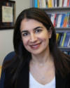

Plenary LecturesThe MED 2018 includes three plenary lectures of leading scientists - we are honoured to have their talks as part of this year’s Conference program. The names of plenary lecturers, place, time and day of their talk, as well as the title of their talk are listed below. |
|
Back to the roots: Multivariate polynomial optimization by numerical linear algebra | ||||
|
| ||||
Abstract: Finding some or all of the roots of a set of multivariate polynomials has numerous applications. This century old problem is at the foundation of algebraic geometry sometimes called the ‘queen of mathematics’. In this discipline, typically, numerical computations are done symbolically, and only quite recently, it was realized that the multivariate polynomial rooting problem can be tackled using the machinery of numerical linear algebra, because of the fundamental insight that it is equivalent to an eigenvalue problem. In order to find some or all roots, we deploy tools like the QR- and singular value decomposition, and (possibly large scale) iterative eigenvalue solvers. We will discuss several eigenvalue decomposition based algorithms to calculate the global minimum of multivariate polynomial optimization problems. We will illustrate our approach with the numerical solution of two open problems in system theory: Calculating from (noisy) data linear dynamic models that are least squares optimal, and finding the least squares global optimum of the H2 model reduction problem. | ||||
Biography: Prof. Dr. Bart De Moor received his MS (1983) and PhD (1988) degrees from the KU Leuven, Belgium, in electrical engineering (control theory). He is a full professor at the department of Electrical Engineering (ESAT-STADIUS) of KU Leuven, where he also holds the ‘CM Health Insurance’ endowed chair in ‘Health Care Systems Quality and Accessibility’. He is a guest professor at the University of Siena, Italy. He was visiting research associate at Stanford University (1988-1991). Between 1991-2007, he was the chief advisor on science and technology and head of cabinet of several federal and regional ministers. He was vice-rector of International Policy of KU Leuven (2009-2013) and head of its Industrial Research Fund (2006-2015). He has published more than 400 scientific journal papers, 450 conference papers, eleven books, and numerous science popularizing contributions. Currently, he is the promoter of 10 PhD students and 4 postdocs and 82 PhDs were obtained under his guidance. His research interests are in numerical linear algebra and algebraic geometry, dynamical systems theory and identification, advanced control theory, machine/deep learning, bioinformatics, digital health and clinical genomics. Dr. De Moor received the Leybold-Heraeus Prize (1986), the Leslie Fox Prize (1989), the Guillemin-Cauer Best Paper Award of the IEEE Transactions on Circuits and Systems (1990), the Laureate of the Belgian Royal Academy of Sciences (1992), the bi-annual Siemens Award (1994), the Best Paper Award of Automatica (IFAC, 1996), the IEEE Signal Processing Society Best Paper Award (1999) and the excellence award of the Flanders Research Foundation (2010) from King Albert II of Belgium. He became fellow of IEEE (2003) and SIAM (2017) and is a member of the Belgian Royal Academy. He co-founded or contributed to 8 spin-off companies, 7 of which are still active or had a successful exit (IPCOS, Data4S, Transport & Mobility Leuven, Trendminer, Cartagenia, Ugentec, Lindacare). He is chair or board member in several cultural, scientific and funding organizations, and member of numerous scientific assessment committees worldwide. |
|
Robotics and Wireless Communications: Opportunities and Challenges | ||||
|
| ||||
 Abstract: Recent years have seen a great progress in the area of robotics. Communication signals are also ubiquitous these days. In this talk, I will explore the opportunities and challenges at this intersection, for robotic sensing and communication. For instance, imagine two unmanned vehicles arriving behind thick concrete walls. They have no prior knowledge of the area behind these walls, but are interested in imaging every square inch of the invisible area through the walls with a high accuracy. Can the robots achieve this with only WiFi signals? In the first part of the talk, I will show that this is indeed possible. I will discuss how our methodology for the co-optimization of path planning and communication has enabled the first demonstration of 3d imaging through walls with only drones and WiFi. I will also discuss other new sensing capabilities that have emerged from our approach, such as occupancy estimation and crowd analytics with only WiFi signals. In the second part of the talk, I will focus on communication-aware robotics, a term coined to refer to robotic systems that explicitly take communication issues into account in their decision making, in order to enable robust connectivity and networked task accomplishment. This is an emerging area of research that not only allows a team of unmanned vehicles to achieve the desired connectivity during their operation, but can also extend the connectivity of the existing communication systems through the use of mobility. I will then discuss our latest theoretical and experimental results along this line. I will show how each robot can go beyond the over-simplified but commonly-used disk model for connectivity, and realistically model the impact of channel uncertainty for the purpose of path planning. I will then show how the unmanned vehicles can properly co-optimize their communication, sensing and navigation objectives under resource constraints. This co-optimized approach can result in a significant performance improvement, as we shall see in the talk. I will also discuss the role of human collaboration in these networks. | ||||
Biography: Yasamin Mostofi received the B.S. degree in electrical engineering from Sharif University of Technology, and the M.S. and Ph.D. degrees from Stanford University. She is currently a professor in the Department of Electrical and Computer Engineering at the University of California Santa Barbara. Yasamin is the recipient of the 2016 Antonio Ruberti Prize from the IEEE Control Systems Society, the Presidential Early Career Award for Scientists and Engineers (PECASE), the National Science Foundation (NSF) CAREER award, and the IEEE 2012 Outstanding Engineer Award of Region 6 (more than 10 Western U.S. states), among other awards. Her research is at the intersection of robotics and communications, on mobile sensor networks. Current research thrusts include X-ray vision for robots, communication-aware robotics, human-robot networks, occupancy estimation, RF sensing, and see-through imaging. Her research has appeared in several reputable news venues such as BBC, Huffington Post, Daily Mail, Engadget, TechCrunch, NSF Science360, ACM News, and IEEE Spectrum, among others. Yasamin is currently an associate editor for the IEEE Transactions on Control of Network Systems. She has served on the Control Systems Society conference editorial board 2008-2013. |
|
Multiagent decision making: learning from observations | ||||
|
| ||||
Abstract: We began using robots to help us with simple and repetitive tasks. Now, we are introducing automation in ever increasing safety critical and complex tasks: intelligent transportation networks, smart power grid, robotics search and rescue, personalized medicine. How do we ensure that these autonomous systems contribute to making our societies safer and more efficient? To answer this question, we have to address two main control challenges: 1) The autonomous systems need to complete complex tasks in partially known changing environments; 2) Network of interacting autonomous systems need to coordinate their decision making and optimise their choices using only local information. Guided by addressing these two challenges, I will present the two main threads of my research. Specifically, I discuss my latest works on data-driven safe control synthesis in uncertain environments and on game theory and mechanism design for coordinating multi-agent decision making. In both cases, I present the underlying theoretical tools and discuss potential applications. | ||||
Biography: Maryam Kamgarpour is an assistant professor at ETH Zurich, Automatic Control Laboratory. She obtained Doctor of Philosophy in Engineering from the University of California, Berkeley (2011) and Bachelor of Applied Sciences from the University of Waterloo (2005). She addresses multiagent decision making and safe control synthesis using game theory, mechanism design, online stochastic and robust optimization. Her work is applied to electrical power systems, transportation systems, and rescue robotics. She is the recipient of NASA High Potential Individual Award, NASA Excellence in Publication Award (2010) and the European Union (ERC) Starting Grant 2015. |